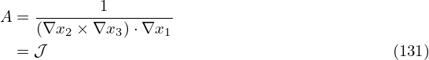
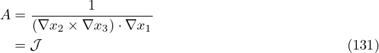

is deï¬ned by
is deï¬ned by
The local safety factor is deï¬ned by
 | (153) |
which characterizes the local pitch angle of a magnetic ï¬eld line on a magnetic surface (i.e. in (𝜃,ϕ) plane). Substituting the contravariant representation of the magnetic ï¬eld, Eq. (151), into the above equation, the local safety factor is written
 | (154) |
Note that the expression  in Eq. (154) depends on the Jacobian 𒥠. This is because the
deï¬nition of  depends on the deï¬nition of 𝜃, which in turn depends on the the Jacobian 𝒥 . [In
passing, note that in terms of
in Eq. (154) depends on the Jacobian 𝒥 . This is because the
deï¬nition of  depends on the deï¬nition of 𝜃, which in turn depends on the the Jacobian 𝒥 . [In
passing, note that in terms of  , the contravariant form of the magnetic ï¬eld, Eq. (151), is
written
, the contravariant form of the magnetic ï¬eld, Eq. (151), is
written
 | (155) |
and the parallel differential operator B0 ⋅∇ is written as
 | (156) |
]
The global safety factor deï¬ned in Eq. (37) is actually the poloidal average of the local safety factor, i.e.,
The physical meaning of q is obvious: it represents the number of toroidal circles a magnetic ï¬eld line travels when the line travels a complete poloidal loop. Note that q and deï¬ned this way can be
negative, which depends on the choice of the positive direction of ϕ and 𜃠coordinates (note that the
safety factor given in G-eqdsk file is always positive, i.e. it is the absolute value of the safety factor
defined here).
deï¬ned this way can be
negative, which depends on the choice of the positive direction of ϕ and 𜃠coordinates (note that the
safety factor given in G-eqdsk file is always positive, i.e. it is the absolute value of the safety factor
defined here).
Next, let us transform the 𜃠integration in expression (158) to a curve integral in the poloidal plane. Using the relation dℓp and d𜃠[Eq. (166)], expression (158) is further written
Expression (159) is used in the GTAW code to numerically calculate the value of q on magnetic surfaces (as a benchmarking of the q proï¬le speciï¬ed in the G-eqdsk ï¬le). Expression (159) can also be considered as a relation between q and g. In the equilibrium problem where q is given (ï¬xed-q equilibrium), we can use expression (159) to obtain the corresponding g (which explicitly appears in the GS equation):|
| (160) |
We note that expression (160) involves magnetic surface averaging, which is unknown before we know Ψ. Therefore iteration is usually needed in solving the ï¬xed-q equilibrium (i.e., we guess the unknown Ψ, so that the magnetic surface averaging in expression (160) can be performed, yielding the values of g.)
Using Bp = |∇Ψ|∕R and Bϕ = g∕R,  the absolute value of q in expression (159) is written